5F
| Transaxle Left Case Disassembly and Reassembly |
Disassembly
1)Remove differential side oil seal from transaxle left case, if necessary. 
2)Remove upper countershaft left bearing outer race (1) using special tools, and remove upper countershaft bearing shim.

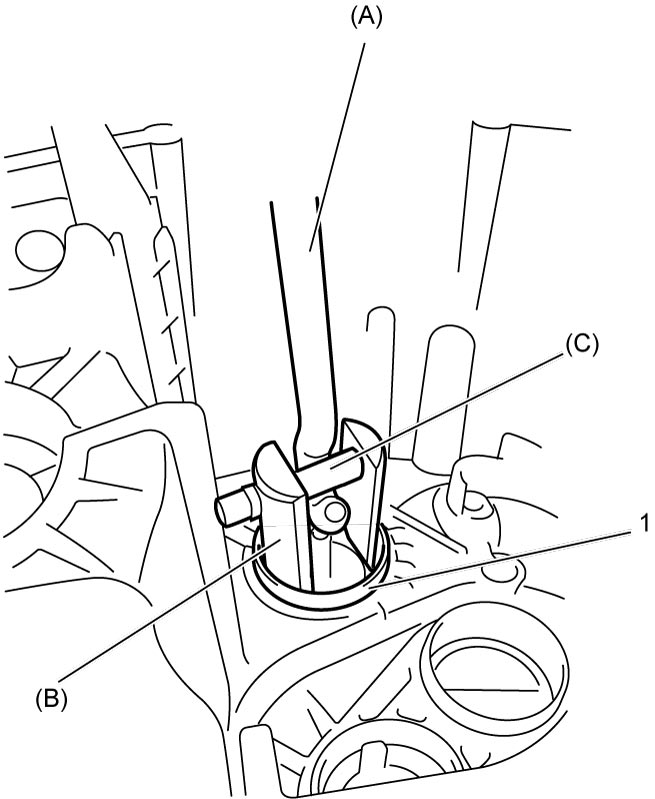
 "Expand image")
3)Remove lower countershaft left bearing outer race (1) using special tools, and remove lower countershaft bearing shim.
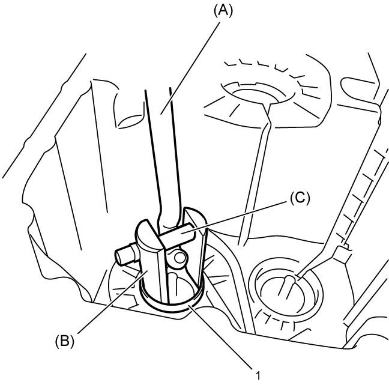
 "Expand image")
4)Remove input shaft left bearing outer race (1) using special tools, and remove input shaft bearing shim.
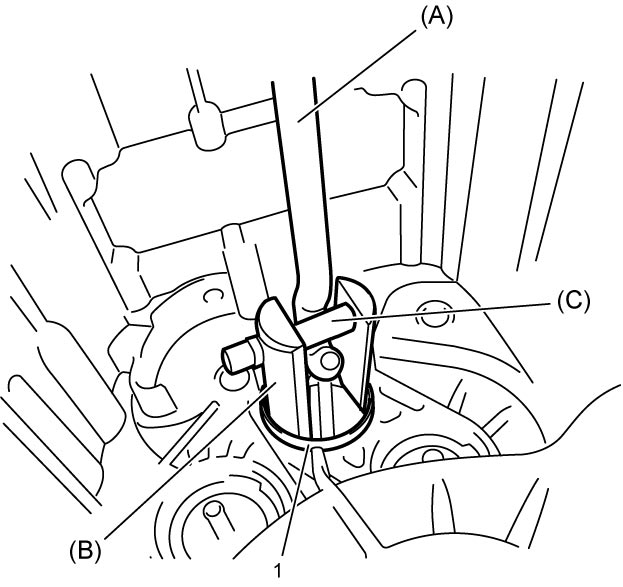
 "Expand image")
5)Remove differential left bearing outer race (1) using special tools, and remove differential bearing shim.
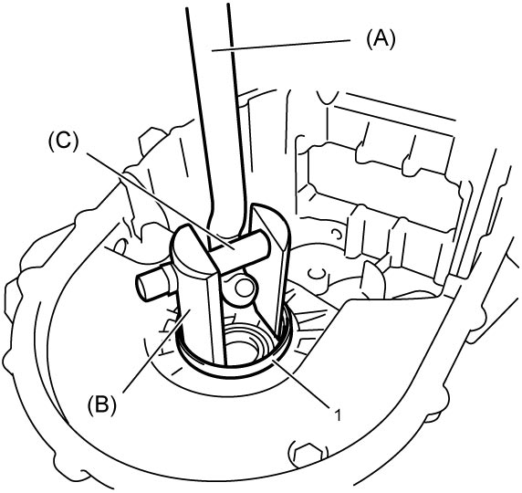
 "Expand image")
6)Remove oil gutter (1).
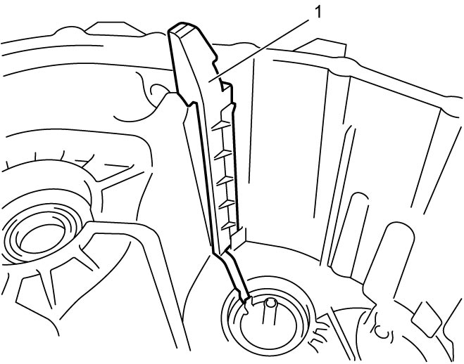
 "Expand image")
7)Remove upper countershaft oil channel (1) and lower countershaft oil channel (2) using flat-bladed screwdriver (3) or the like.
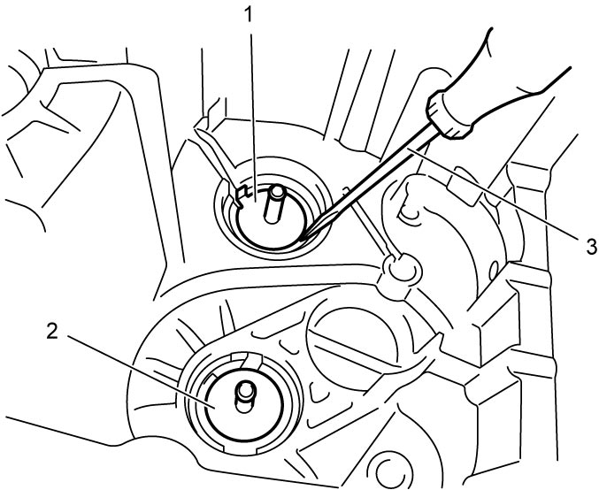
 "Expand image")
Reassembly
1)Install oil gutter (1) to transaxle left case (2) by fitting its claw (3) into hole (4) of the case.
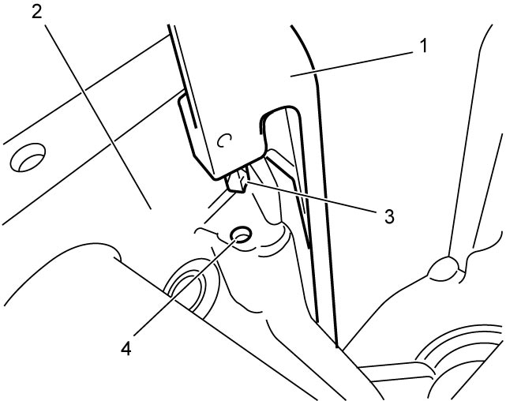
 "Expand image")
2)Install upper countershaft left bearing shim (1) referring to “Reassembly” Step 5) – 16) under Twin Clutch System Disassembly and Reassembly.
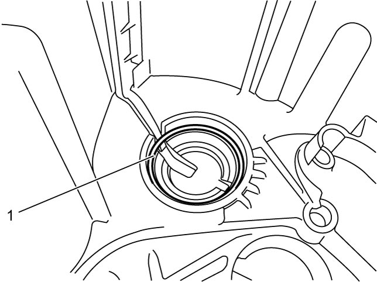
 "Expand image")
3)Install upper countershaft left bearing outer race (1) using special tool and hammer.
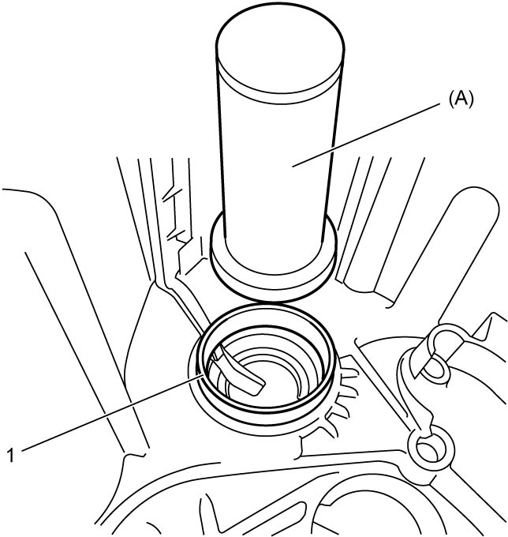
 "Expand image")
4)Install lower countershaft left bearing outer race and input shaft left bearing outer race in the same manner as in step 2) – 3).
5)Install differential bearing shim (1) referring to “Reassembly” Step 5) – 16) under Twin Clutch System Disassembly and Reassembly and then install differential left bearing outer race (2) using special tools and hammer.
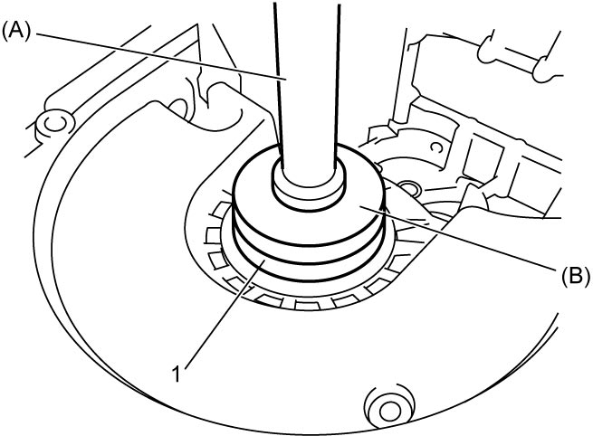
 "Expand image")
6)Install new upper countershaft oil channel (1) and lower countershaft oil channel to transaxle left case and caulk them using punch or the like.
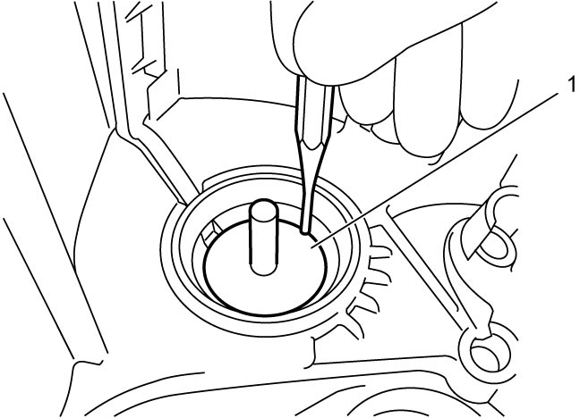
 "Expand image")
7)Install new differential side oil seal to transaxle left case, if removed.
8)After replacing transaxle inner parts, perform TCM and Clutch Initialization.